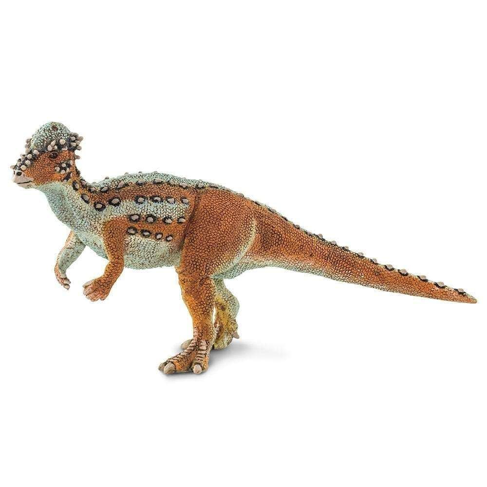
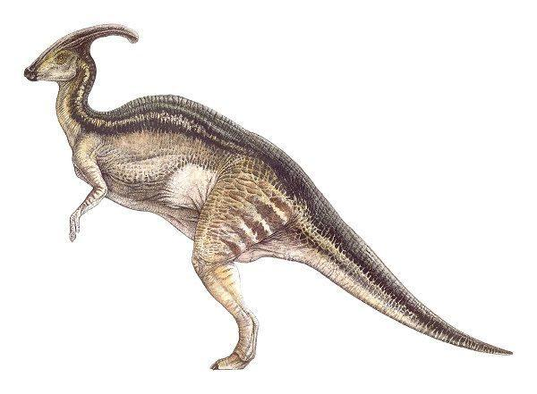
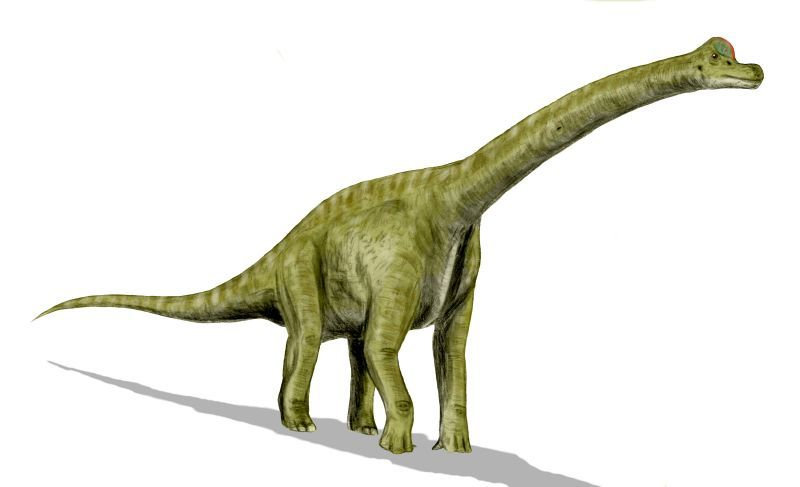
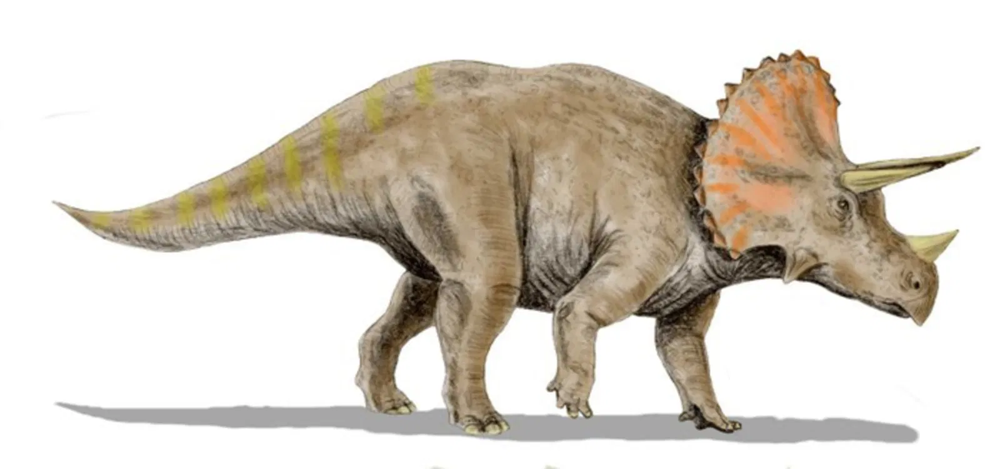

tiranosaurio rex
Tyrannosaurus rex es una especie y tipo del género extinto Tyrannosaurus de dinosaurio terópodo tiranosáurido, que vivió a finales del período
Cretácico, hace aproximadamente entre 68 y 66 millones de años, en el Maastrichtiense, en lo que es hoy América del Norte.

parasaurolophus
Parasaurolophus es un género de dinosaurio ornitópodo hadrosáurido, que vivieron a finales del período Cretácico Superior, entre 76 a 73 millones
de años, en el Campaniano, en lo que hoy es Norteamérica.

stegosaurus
Los estegosaurianos (Stegosauria) son un infraorden de dinosaurios tireóforos que vivieron desde del período Jurásico hasta el Cretácico, hace
aproximadamente 169 y 125 millones de años, desde el Bathoniense al Aptiense, distribuyéndose por todo el mundo

brachiosaurus
Brachiosaurus altithorax, castellanizado como braquiosaurio, es la única especie conocida del género extinto Brachiosaurus de dinosaurio
saurópodo braquiosáurido, que vivió durante el Jurásico Superior, hace aproximadamente 154 a 153 millones de años, en lo que es hoy Norteamérica

triceratops
Triceratops es un género con dos especies conocidas de dinosaurios ceratopsianos ceratópsidos, que vivieron a finales del período Cretácico, hace
aproximadamente entre 68 y 66 millones de años, durante el Maastrichtiense, en lo que hoy es Norteamérica.